Detailed and Supplementary Analyses for 3 – Contrasting the Field
To construct a benchmark for public salience, we rely on the data provided by the Media Cloud initiative (Bermejo et al., 2026; Roberts et al., 2021), a large-scale open-source project providing an interface to tap into many RSS feeds and archives of public news sources. For our analysis, we rely on the US News Sources corpus, consisting of 247 popular US news outlets. Media Cloud has limited regex capabilities, which is why we construct our benchmark bottom-up by using its API to query every individual consumer technology (a total of 901 queries), with each query prepared following standard search-string conventions, i.e., truncating word endings and adding wildcard operators. As we were interested only in news stories in which these technologies are a focal object, we restricted our search to titles. We then deduplicated the news stories and aggregated their counts per cluster across time, constructing a database comparable to our corpus of academic articles. Because Media Cloud’s index is only reliable from 2008 onwards (Roberts et al., 2021), we restrict all statistical analyses reported below to the period between 01.01.2008 and 30.06.2026.
Based on these two corpora, we perform both a gap analysis, analyzing which clusters are generally under- or over-represented in academic articles compared to news stories as the baseline, and a lag analysis with full permutation across all 19 available years (2008-2026).
Gap Analysis
We compute the share of attention devoted to each consumer technology cluster within academic articles and within news stories, and compare the two percentages against each other.
To gauge whether one source pays credibly more or less attention to any given consumer technology, we use Dirichlet posteriors to compare academic attention against media attention, taking media attention as the baseline / prior. Furthermore, we report the rank-order agreement between the two corpora to provide a more robust measure of relative importance within each corpus.
| Technology cluster | Academic share | Academic rank | Media share | Media rank | Gap | Ratio | Mark |
|---|---|---|---|---|---|---|---|
| Algorithms & Recommendations | 6.58% | 6 | 1.32% | 12 | +5.3 | 4.97 | Credibly higher |
| AR, VR & Robots | 3.72% | 13 | 2.18% | 11 | +1.5 | 1.70 | Credibly higher |
| Auctions & Pricing | 1.29% | 16 | 0.02% | 16 | +1.3 | 57.10 | Credibly higher |
| Computers & Software | 7.01% | 5 | 9.21% | 5 | -2.2 | 0.76 | Credibly lower |
| Crypto & Fintech | 6.22% | 7.5 | 3.15% | 9 | +3.1 | 1.97 | Credibly higher |
| E-Commerce | 4.51% | 11 | 1.10% | 13 | +3.4 | 4.11 | Credibly higher |
| Gaming & Digital Platforms | 7.15% | 4 | 2.37% | 10 | +4.8 | 3.02 | Credibly higher |
| (Generative) AI | 15.52% | 1 | 5.44% | 8 | +10.1 | 2.85 | Credibly higher |
| Internet & Broadcasting | 6.22% | 7.5 | 16.79% | 2 | -10.6 | 0.37 | Credibly lower |
| Mobility & Transportation | 1.79% | 15 | 0.73% | 14 | +1.1 | 2.45 | Credibly higher |
| Search & Advertising | 5.94% | 9 | 7.61% | 6 | -1.7 | 0.78 | Credibly lower |
| Smartphones & Apps | 8.08% | 3 | 10.80% | 4 | -2.7 | 0.75 | Credibly lower |
| Social Media | 12.95% | 2 | 21.42% | 1 | -8.5 | 0.60 | Credibly lower |
| Streaming, Audio & Video | 3.79% | 12 | 6.47% | 7 | -2.7 | 0.59 | Credibly lower |
| Tracking & Wearables | 3.65% | 14 | 0.53% | 15 | +3.1 | 6.85 | Credibly higher |
| Other | 5.58% | 10 | 10.84% | 3 | -5.3 | 0.51 | Credibly lower |
| Technology cluster | Academic share | Academic rank | Media share | Media rank | Rank difference |
|---|---|---|---|---|---|
| (Generative) AI | 15.52% | 1 | 5.44% | 8 | +7 |
| AR, VR & Robots | 3.72% | 13 | 2.18% | 11 | -2 |
| Algorithms & Recommendations | 6.58% | 6 | 1.32% | 12 | +6 |
| Auctions & Pricing | 1.29% | 16 | 0.02% | 16 | +0 |
| Computers & Software | 7.01% | 5 | 9.21% | 5 | +0 |
| Crypto & Fintech | 6.22% | 7.5 | 3.15% | 9 | +1.5 |
| E-Commerce | 4.51% | 11 | 1.10% | 13 | +2 |
| Gaming & Digital Platforms | 7.15% | 4 | 2.37% | 10 | +6 |
| Internet & Broadcasting | 6.22% | 7.5 | 16.79% | 2 | -5.5 |
| Mobility & Transportation | 1.79% | 15 | 0.73% | 14 | -1 |
| Search & Advertising | 5.94% | 9 | 7.61% | 6 | -3 |
| Smartphones & Apps | 8.08% | 3 | 10.80% | 4 | +1 |
| Social Media | 12.95% | 2 | 21.42% | 1 | -1 |
| Streaming, Audio & Video | 3.79% | 12 | 6.47% | 7 | -5 |
| Tracking & Wearables | 3.65% | 14 | 0.53% | 15 | +1 |
| Other | 5.58% | 10 | 10.84% | 3 | -7 |
Journal Specific Gaps
We repeat the gap analysis for each of the seven journals separately, comparing the journal’s own distribution of attention across the sixteen clusters against the same news-story baseline. Table 3 reports one row per cluster, with an Overall column for the pooled corpus of academic articles and one column per journal; each cell gives the academic minus media share in percentage points and the media rank minus the academic rank in parentheses.
| Technology cluster | Overall | International Journal of Research in Marketing | Journal of Consumer Psychology | Journal of Consumer Research | Journal of Marketing | Journal of Marketing Research | Journal of the Academy of Marketing Science | Marketing Science |
|---|---|---|---|---|---|---|---|---|
| Algorithms & Recommendations | +5.3% (+6) | +1.8% (+0) | +11.8% (+10) | +6.3% (+5.5) | +5.4% (+6) | +4.3% (+2) | +3.1% (+3.5) | +7.6% (+7) |
| AR, VR & Robots | +1.5% (-2) | +0.6% (-2) | +4.9% (+5) | +0.1% (-1.5) | +1.2% (-1) | +1.6% (-2) | +6.7% (+8) | -1.5% (-5) |
| Auctions & Pricing | +1.3% (+0) | +1.2% (+1) | -0.0% (+0) | -0.0% (+0.5) | +0.9% (+0) | -0.0% (+0) | +1.0% (+0) | +3.8% (+3.5) |
| Computers & Software | -2.2% (+0) | -1.3% (+0) | -1.1% (+1) | +2.2% (+2) | -3.9% (-3) | -2.6% (-2.5) | -1.8% (+0) | -4.1% (-5) |
| Crypto & Fintech | +3.1% (+1.5) | +7.1% (+6) | +1.9% (+0) | +6.0% (+4) | +1.2% (-0.5) | +3.9% (+3) | +1.3% (+0.5) | +0.6% (-3.5) |
| E-Commerce | +3.4% (+2) | +4.0% (+4) | -0.1% (-1) | -1.1% (-2.5) | +4.6% (+6) | +4.1% (+1) | +1.4% (+0) | +6.1% (+7) |
| Gaming & Digital Platforms | +4.8% (+6) | +5.1% (+4) | +0.7% (-1) | +2.2% (+0) | +5.3% (+6) | +6.1% (+5.5) | +3.0% (+3) | +6.9% (+6) |
| (Generative) AI | +10.1% (+7) | +13.5% (+7) | +17.8% (+7) | +9.8% (+7) | +9.9% (+6) | +3.5% (+5) | +15.2% (+7) | +5.9% (+6) |
| Internet & Broadcasting | -10.6% (-5.5) | -10.5% (-5) | -14.8% (-10) | -10.7% (-6.5) | -9.6% (-3) | -11.1% (-8) | -8.4% (-2) | -10.9% (-7) |
| Mobility & Transportation | +1.1% (-1) | -0.3% (-2) | +0.3% (+0) | +1.6% (+1.5) | +1.7% (-0.5) | +2.1% (-0.5) | +0.7% (-1) | +1.3% (-0.5) |
| Search & Advertising | -1.7% (-3) | -3.3% (-4) | -2.6% (-3) | -3.8% (-5) | -3.3% (-3.5) | -1.0% (-1.5) | -3.7% (-4) | +3.0% (+3) |
| Smartphones & Apps | -2.7% (+1) | +0.7% (+2) | -3.7% (-2) | -3.2% (-2.5) | -0.3% (+1) | -1.4% (+2) | -4.9% (-2) | -6.3% (-7) |
| Social Media | -8.5% (-1) | -11.5% (-3) | -14.4% (-5) | -9.2% (-1) | -4.2% (+0) | -8.7% (+0) | -3.7% (-1) | -9.7% (+0) |
| Streaming, Audio & Video | -2.7% (-5) | -0.9% (-1) | -5.5% (-7) | -4.9% (-7) | -4.1% (-7.5) | -3.6% (-7.5) | -3.5% (-4.5) | +0.1% (-0.5) |
| Tracking & Wearables | +3.1% (+1) | +1.0% (+1) | +4.5% (+6) | +5.6% (+6.5) | +2.3% (+2) | +8.0% (+10.5) | +1.4% (+1) | +1.5% (+0.5) |
| Other | -5.3% (-7) | -7.3% (-8) | +0.3% (+0) | -0.9% (-1) | -7.0% (-8) | -5.2% (-7) | -7.9% (-8.5) | -4.3% (-4.5) |
Lag Analysis
We analyze the attention devoted to each consumer technology across time using full permutation across the 19 years (with lags ranging from -5 to +5), accounting for the autocorrelation of each series. We correlate the two measures of attention at every lag using Pearson correlations. We shift news stories against academic articles, i.e., in negative lags academic articles lead news stories, and in positive lags news stories lead academic articles. Lags with fewer than 3 pairs (at the bounds of the available time period) are excluded from the analysis.
We calculate per-lag permutation p-values through circular shifting of the news-story values against the academic-article values, keeping the autocorrelation of the news-story series intact. As we theoretically argue that we cover, rather than sample, the research space of consumer technologies, we enumerate the null distribution completely (meaning that we shift \(n - 1\) times and do not sample repeatedly under the assumption of an underlying distribution). This also means that, with a maximum of 19 years available, our p-values cannot go below 0.053.
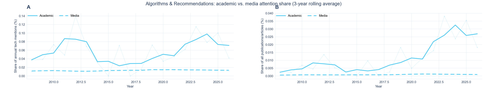
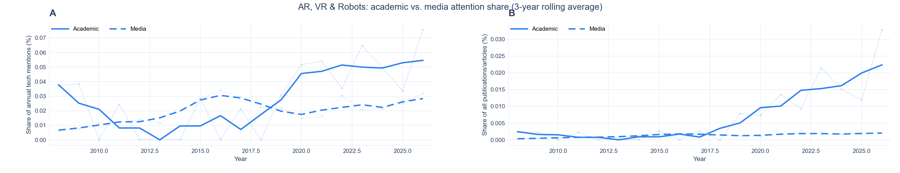
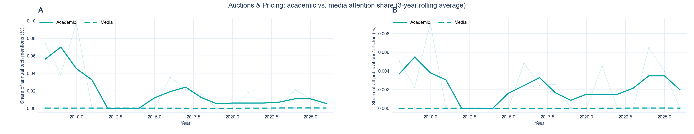
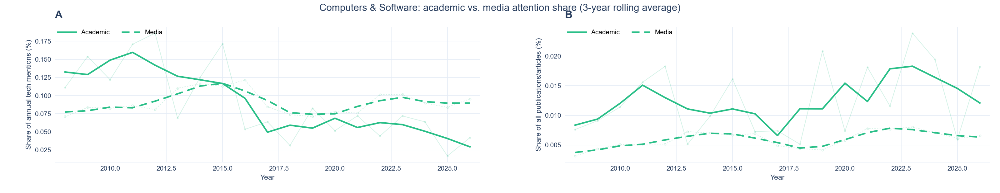
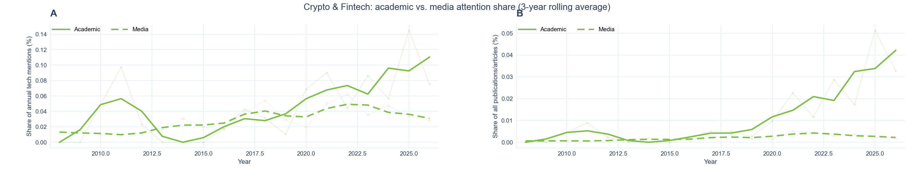
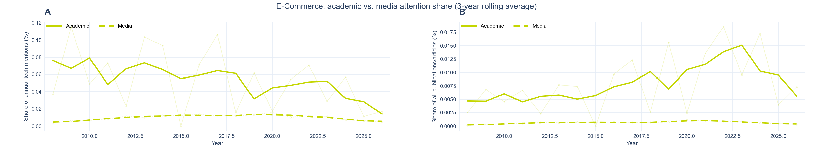
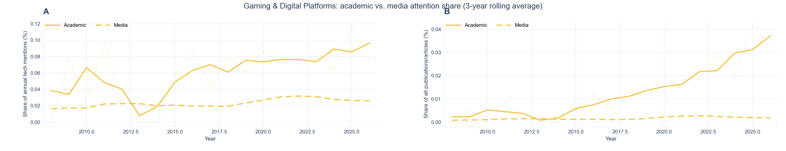
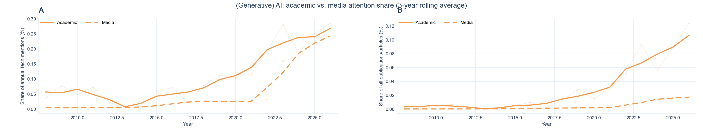
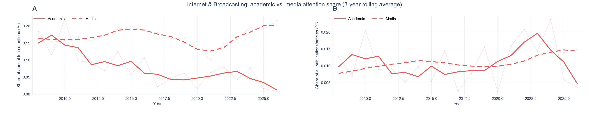
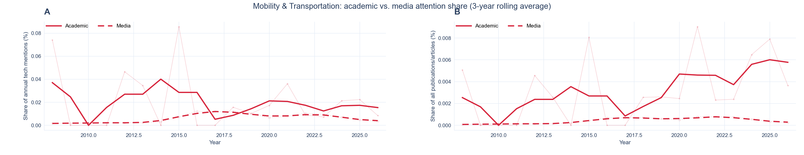
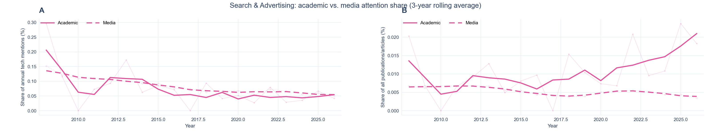
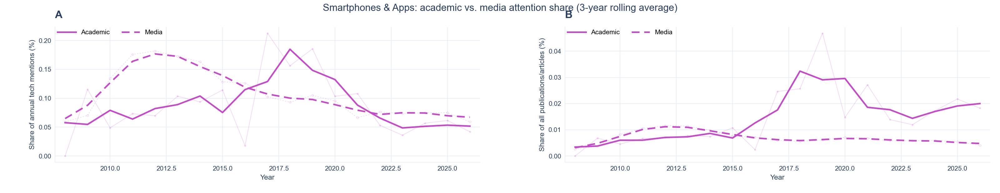
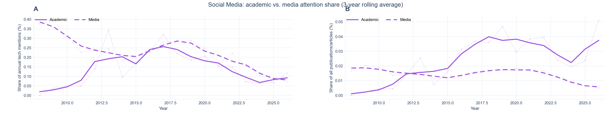
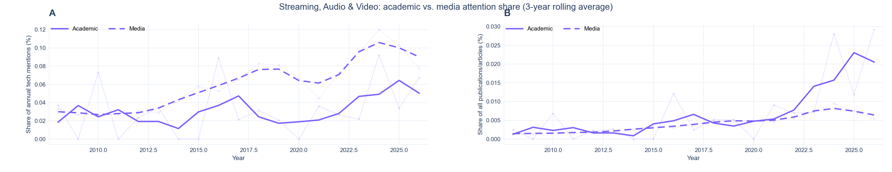
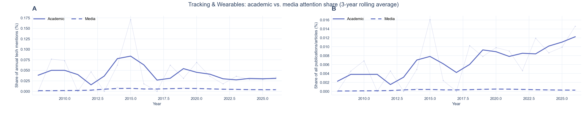
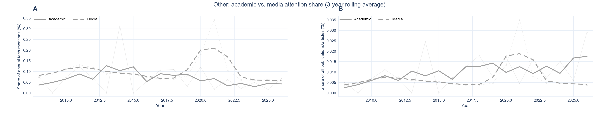
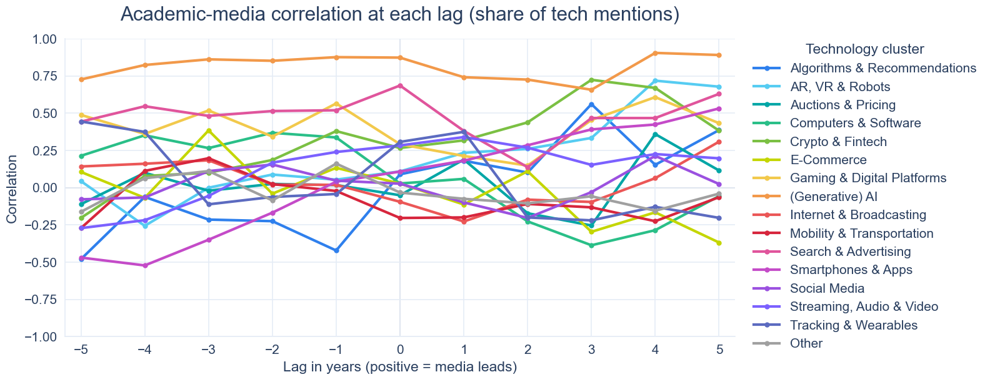
| Technology cluster | -5 | -4 | -3 | -2 | -1 | 0 | 1 | 2 | 3 | 4 | 5 | Best lag |
|---|---|---|---|---|---|---|---|---|---|---|---|---|
| (Generative) AI | 0.727 (p = .071) | 0.824 (p = .067) | 0.862 (p = .062) | 0.852 (p = .059) | 0.876 (p = .056) | 0.873 (p = .053) | 0.741 (p = .056) | 0.726 (p = .059) | 0.657 (p = .062) | 0.905 (p = .067) | 0.891 (p = .071) | 4 |
| AR, VR & Robots | 0.044 (p = .857) | -0.256 (p = .200) | -0.000 (p = 1.000) | 0.088 (p = .882) | 0.054 (p = .778) | 0.109 (p = .842) | 0.234 (p = .667) | 0.261 (p = .706) | 0.334 (p = .562) | 0.718 (p = .067) | 0.678 (p = .143) | 4 |
| Algorithms & Recommendations | -0.480 (p = .143) | -0.062 (p = .933) | -0.214 (p = .500) | -0.225 (p = .471) | -0.422 (p = .278) | 0.090 (p = .895) | 0.181 (p = .556) | 0.102 (p = .941) | 0.561 (p = .125) | 0.154 (p = .800) | 0.387 (p = .357) | 3 |
| Auctions & Pricing | -0.111 (p = .643) | 0.100 (p = .733) | -0.020 (p = .938) | 0.025 (p = .765) | 0.018 (p = .889) | -0.051 (p = .684) | 0.189 (p = .278) | -0.171 (p = .294) | -0.254 (p = .438) | 0.360 (p = .200) | 0.115 (p = .643) | 4 |
| Computers & Software | 0.214 (p = .714) | 0.352 (p = .333) | 0.266 (p = .438) | 0.368 (p = .294) | 0.337 (p = .222) | 0.028 (p = 1.000) | 0.059 (p = .833) | -0.226 (p = .529) | -0.386 (p = .312) | -0.285 (p = .400) | -0.056 (p = .857) | -2 |
| Crypto & Fintech | -0.203 (p = .429) | 0.078 (p = .733) | 0.101 (p = .812) | 0.186 (p = .529) | 0.380 (p = .333) | 0.267 (p = .737) | 0.318 (p = .611) | 0.438 (p = .294) | 0.724 (p = .062) | 0.669 (p = .133) | 0.383 (p = .357) | 3 |
| E-Commerce | 0.106 (p = .643) | -0.068 (p = .667) | 0.384 (p = .125) | -0.040 (p = .824) | 0.133 (p = .444) | 0.027 (p = 1.000) | -0.113 (p = .444) | 0.110 (p = .706) | -0.296 (p = .312) | -0.165 (p = .467) | -0.368 (p = .143) | -3 |
| Gaming & Digital Platforms | 0.489 (p = .071) | 0.361 (p = .333) | 0.518 (p = .062) | 0.343 (p = .294) | 0.566 (p = .056) | 0.292 (p = .368) | 0.213 (p = .722) | 0.148 (p = .765) | 0.455 (p = .250) | 0.608 (p = .133) | 0.433 (p = .214) | 4 |
| Internet & Broadcasting | 0.142 (p = .857) | 0.161 (p = .667) | 0.184 (p = .625) | 0.021 (p = .941) | 0.019 (p = .944) | -0.095 (p = .737) | -0.227 (p = .500) | -0.080 (p = .882) | -0.096 (p = .812) | 0.064 (p = .933) | 0.309 (p = .357) | 5 |
| Mobility & Transportation | -0.271 (p = .357) | 0.113 (p = .800) | 0.198 (p = .188) | 0.024 (p = .882) | -0.022 (p = .833) | -0.203 (p = .158) | -0.199 (p = .222) | -0.109 (p = .647) | -0.132 (p = .688) | -0.225 (p = .467) | -0.064 (p = .929) | -3 |
| Search & Advertising | 0.443 (p = .071) | 0.547 (p = .067) | 0.482 (p = .062) | 0.515 (p = .059) | 0.520 (p = .056) | 0.686 (p = .053) | 0.381 (p = .278) | 0.137 (p = .647) | 0.468 (p = .188) | 0.467 (p = .200) | 0.630 (p = .071) | 0 |
| Smartphones & Apps | -0.469 (p = .143) | -0.522 (p = .133) | -0.349 (p = .438) | -0.167 (p = .824) | 0.040 (p = 1.000) | 0.108 (p = .895) | 0.181 (p = .833) | 0.285 (p = .647) | 0.391 (p = .562) | 0.424 (p = .533) | 0.532 (p = .357) | 5 |
| Social Media | -0.078 (p = .929) | -0.065 (p = .867) | 0.111 (p = .750) | 0.155 (p = .706) | 0.047 (p = .833) | 0.027 (p = .895) | -0.099 (p = .722) | -0.203 (p = .294) | -0.030 (p = .938) | 0.214 (p = .600) | 0.025 (p = 1.000) | 4 |
| Streaming, Audio & Video | -0.271 (p = .357) | -0.218 (p = .400) | -0.055 (p = .750) | 0.168 (p = .588) | 0.240 (p = .222) | 0.284 (p = .211) | 0.340 (p = .167) | 0.269 (p = .294) | 0.153 (p = .562) | 0.226 (p = .333) | 0.197 (p = .571) | 1 |
| Tracking & Wearables | 0.444 (p = .143) | 0.374 (p = .267) | -0.112 (p = .750) | -0.062 (p = .824) | -0.042 (p = .778) | 0.307 (p = .211) | 0.375 (p = .111) | -0.200 (p = .412) | -0.219 (p = .250) | -0.128 (p = .600) | -0.202 (p = .500) | -5 |
| Other | -0.162 (p = .286) | 0.063 (p = .800) | 0.112 (p = .500) | -0.086 (p = .588) | 0.162 (p = .278) | -0.033 (p = .737) | -0.075 (p = .556) | -0.105 (p = .471) | -0.058 (p = .750) | -0.154 (p = .200) | -0.040 (p = .857) | -1 |
Journal-Specific Temporal Alignment
For each cluster we take the year of maximum attention in news stories and the year of maximum attention in each journal, both on a three-year rolling average of the within-technology share, and correlate the two orderings across clusters with Spearman’s \(\rho\) and Kendall’s \(\tau\). Table 5 reports the peak years and Table 6 the agreement per journal.
| Technology cluster | Media | International Journal of Research in Marketing | Journal of Consumer Psychology | Journal of Consumer Research | Journal of Marketing | Journal of Marketing Research | Journal of the Academy of Marketing Science | Marketing Science |
|---|---|---|---|---|---|---|---|---|
| Algorithms & Recommendations | 2021 | 2010 | 2009 | 2026 | 2012 | 2011 | 2015 | 2019 |
| AR, VR & Robots | 2016 | 2026 | 2024 | 2008 | 2023 | 2024 | 2022 | 2008 |
| Auctions & Pricing | 2025 | 2016 | 2008 | 2015 | 2009 | |||
| Computers & Software | 2015 | 2015 | 2021 | 2008 | 2012 | 2011 | 2008 | 2014 |
| Crypto & Fintech | 2022 | 2026 | 2016 | 2025 | 2026 | 2026 | 2026 | 2019 |
| E-Commerce | 2019 | 2008 | 2015 | 2013 | 2015 | 2020 | 2010 | |
| Gaming & Digital Platforms | 2022 | 2026 | 2010 | 2020 | 2015 | 2021 | 2018 | 2024 |
| (Generative) AI | 2026 | 2023 | 2026 | 2026 | 2022 | 2026 | 2026 | 2024 |
| Internet & Broadcasting | 2026 | 2015 | 2009 | 2014 | 2009 | 2010 | 2015 | 2010 |
| Mobility & Transportation | 2017 | 2020 | 2026 | 2019 | 2008 | 2023 | 2020 | 2014 |
| Search & Advertising | 2008 | 2010 | 2015 | 2012 | 2019 | 2008 | 2011 | 2008 |
| Smartphones & Apps | 2012 | 2018 | 2026 | 2019 | 2017 | 2008 | 2018 | 2018 |
| Social Media | 2008 | 2012 | 2018 | 2022 | 2019 | 2017 | 2014 | 2014 |
| Streaming, Audio & Video | 2024 | 2011 | 2023 | 2023 | 2025 | 2022 | 2023 | 2025 |
| Tracking & Wearables | 2015 | 2025 | 2009 | 2021 | 2008 | 2015 | 2024 | 2013 |
| Other | 2021 | 2008 | 2012 | 2009 | 2013 | 2017 | 2021 | 2016 |
| Journal | Clusters | \(\rho\) | \(\tau\) | Median year difference |
|---|---|---|---|---|
| Journal of Marketing Research | 15 | .450 | .350 | -1.0 |
| Journal of Consumer Research | 14 | .385 | .264 | +1.0 |
| Journal of the Academy of Marketing Science | 16 | .384 | .253 | +0.5 |
| Marketing Science | 16 | .368 | .316 | -2.0 |
| International Journal of Research in Marketing | 16 | .134 | .122 | +1.0 |
| Journal of Marketing | 16 | −.007 | −.017 | -5.0 |
| Journal of Consumer Psychology | 15 | −.142 | −.091 | -1.0 |